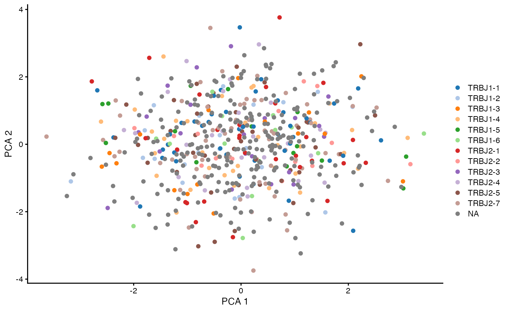

vignettes/repertoire_and_expression.Rmd
repertoire_and_expression.Rmd
library(CellaRepertorium)
library(SingleCellExperiment)
#> Loading required package: SummarizedExperiment
#> Loading required package: MatrixGenerics
#> Loading required package: matrixStats
#>
#> Attaching package: 'MatrixGenerics'
#> The following objects are masked from 'package:matrixStats':
#>
#> colAlls, colAnyNAs, colAnys, colAvgsPerRowSet, colCollapse,
#> colCounts, colCummaxs, colCummins, colCumprods, colCumsums,
#> colDiffs, colIQRDiffs, colIQRs, colLogSumExps, colMadDiffs,
#> colMads, colMaxs, colMeans2, colMedians, colMins, colOrderStats,
#> colProds, colQuantiles, colRanges, colRanks, colSdDiffs, colSds,
#> colSums2, colTabulates, colVarDiffs, colVars, colWeightedMads,
#> colWeightedMeans, colWeightedMedians, colWeightedSds,
#> colWeightedVars, rowAlls, rowAnyNAs, rowAnys, rowAvgsPerColSet,
#> rowCollapse, rowCounts, rowCummaxs, rowCummins, rowCumprods,
#> rowCumsums, rowDiffs, rowIQRDiffs, rowIQRs, rowLogSumExps,
#> rowMadDiffs, rowMads, rowMaxs, rowMeans2, rowMedians, rowMins,
#> rowOrderStats, rowProds, rowQuantiles, rowRanges, rowRanks,
#> rowSdDiffs, rowSds, rowSums2, rowTabulates, rowVarDiffs, rowVars,
#> rowWeightedMads, rowWeightedMeans, rowWeightedMedians,
#> rowWeightedSds, rowWeightedVars
#> Loading required package: GenomicRanges
#> Loading required package: stats4
#> Loading required package: BiocGenerics
#>
#> Attaching package: 'BiocGenerics'
#> The following objects are masked from 'package:stats':
#>
#> IQR, mad, sd, var, xtabs
#> The following objects are masked from 'package:base':
#>
#> anyDuplicated, append, as.data.frame, basename, cbind, colnames,
#> dirname, do.call, duplicated, eval, evalq, Filter, Find, get, grep,
#> grepl, intersect, is.unsorted, lapply, Map, mapply, match, mget,
#> order, paste, pmax, pmax.int, pmin, pmin.int, Position, rank,
#> rbind, Reduce, rownames, sapply, setdiff, sort, table, tapply,
#> union, unique, unsplit, which.max, which.min
#> Loading required package: S4Vectors
#>
#> Attaching package: 'S4Vectors'
#> The following objects are masked from 'package:base':
#>
#> expand.grid, I, unname
#> Loading required package: IRanges
#> Loading required package: GenomeInfoDb
#> Loading required package: Biobase
#> Welcome to Bioconductor
#>
#> Vignettes contain introductory material; view with
#> 'browseVignettes()'. To cite Bioconductor, see
#> 'citation("Biobase")', and for packages 'citation("pkgname")'.
#>
#> Attaching package: 'Biobase'
#> The following object is masked from 'package:MatrixGenerics':
#>
#> rowMedians
#> The following objects are masked from 'package:matrixStats':
#>
#> anyMissing, rowMedians
library(dplyr)
#>
#> Attaching package: 'dplyr'
#> The following object is masked from 'package:Biobase':
#>
#> combine
#> The following objects are masked from 'package:GenomicRanges':
#>
#> intersect, setdiff, union
#> The following object is masked from 'package:GenomeInfoDb':
#>
#> intersect
#> The following objects are masked from 'package:IRanges':
#>
#> collapse, desc, intersect, setdiff, slice, union
#> The following objects are masked from 'package:S4Vectors':
#>
#> first, intersect, rename, setdiff, setequal, union
#> The following objects are masked from 'package:BiocGenerics':
#>
#> combine, intersect, setdiff, union
#> The following object is masked from 'package:matrixStats':
#>
#> count
#> The following objects are masked from 'package:stats':
#>
#> filter, lag
#> The following objects are masked from 'package:base':
#>
#> intersect, setdiff, setequal, union
library(ggplot2)
library(readr)
library(tidyr)
#>
#> Attaching package: 'tidyr'
#> The following object is masked from 'package:S4Vectors':
#>
#> expand
library(stringr)
library(purrr)
#>
#> Attaching package: 'purrr'
#> The following object is masked from 'package:GenomicRanges':
#>
#> reduce
#> The following object is masked from 'package:IRanges':
#>
#> reduceIt is possible to combine ContigCellDB objects with
SingleCellExperiment objects that measure overlapping
barcodes. We choose to include the ContigCellDB object as a
member of the colData. In this way, it is possible to
include different cellular “views” of the repertoire, such as the alpha
chain and beta chain properties, as well as the paired clonotypes.
First we’ll cook up some single cell expression data.
set.seed(1345)
data(ccdb_ex)
barcodes = ccdb_ex$cell_tbl[ccdb_ex$cell_pk]
# Take a subsample of almost all of the barcdes
barcodes = barcodes[sample(nrow(barcodes), nrow(barcodes) - 5),]
samples = unique(ccdb_ex$cell_tbl[setdiff(ccdb_ex$cell_pk, 'barcode')])
# For each sample, generate 0-100 "extra" barcodes for which only 5' expression is recovered
extra = samples %>% rowwise() %>% mutate(extrabc = {
extra_bc = floor(runif(1, 0, 100))
list(tibble(barcode = paste0('barcode', seq_len(extra_bc))))
})
extra = extra %>% unnest(cols = c(extrabc))
all_bc = bind_rows(extra, barcodes)Simulate some “cells” and “genes” that nearly form a superset of the cells for which repertoire are available. This is generally true if no barcode filters have been applied to the expression data. In practice a few cells may have repertoire but not expression (or fail QC for expression). We will work with the intersection of these cells.
genes = 200
cells = nrow(all_bc)
array_size = genes*cells
expression = matrix(rnbinom(array_size, size = 5, mu = 3), nrow = genes, ncol = cells)
sce = SingleCellExperiment(assay = list(counts = expression), colData = all_bc)
ccdb2 = ccdb_join(sce, ccdb_ex)
ccdb2 = cdhit_ccdb(ccdb2, 'cdr3', type = 'AA', cluster_pk = 'aa80', identity = .8, min_length = 5)
ccdb2 = fine_clustering(ccdb2, sequence_key = 'cdr3', type = 'AA', keep_clustering_details = FALSE)
#> Calculating intradistances on 993 clusters.
#> SummarizingThe ccdb_join(template, ccdb) function does a left join
of the template onto the cell_tbl of the
ccdb. This will ensure that the cell_tbl is
expanded and ordered properly to mesh with sce when we add
it below.
colData(sce)$alpha = canonicalize_cell(ccdb2, chain == 'TRA', contig_fields = c('chain', 'v_gene','d_gene', 'j_gene', 'aa80'))
colData(sce)$beta = canonicalize_cell(ccdb2, chain == 'TRB', contig_fields = c('chain', 'v_gene','d_gene', 'j_gene', 'aa80'))
colData(sce)$pairing = enumerate_pairing(ccdb2, chain_recode_fun = 'guess')We can add multiple views, represented as fields in the
colData(sce) of the repertoire.
We can leverage Scater’s ability to use “nested” data frames to visualize TCR features.
library(scater)
#> Loading required package: scuttle
sce = logNormCounts(sce)
sce = runPCA(sce)
plotReducedDim(sce, dimred = 'PCA', colour_by = I(sce$pairing$pairing), point_alpha = 1)Here we calculate the first two principal components (which aren’t very interesting because these are simulated data without any special structure), and then visualize if the TCR was paired or not.
only_paired = sce[,which(sce$pairing$pairing == 'paired')]
plotReducedDim(only_paired, dimred = 'PCA', colour_by = I(only_paired$alpha$j_gene), point_alpha = 1)
#> Warning: Removed 328 rows containing missing values (geom_point).
plotReducedDim(only_paired, dimred = 'PCA', colour_by = I(only_paired$beta$j_gene), point_alpha = 1)
Since the ContigCellDB is nested within the
SingleCellExperiment it automatically gets subsetted
appropriately when the parent object is subsetted. Enough
data.frame-like semantics have been implemented so that
fields from the cell_tbl can be visualized.
sessionInfo()
#> R version 4.1.2 (2021-11-01)
#> Platform: aarch64-apple-darwin20 (64-bit)
#> Running under: macOS Monterey 12.3.1
#>
#> Matrix products: default
#> BLAS: /Library/Frameworks/R.framework/Versions/4.1-arm64/Resources/lib/libRblas.0.dylib
#> LAPACK: /Library/Frameworks/R.framework/Versions/4.1-arm64/Resources/lib/libRlapack.dylib
#>
#> locale:
#> [1] en_US.UTF-8/en_US.UTF-8/en_US.UTF-8/C/en_US.UTF-8/en_US.UTF-8
#>
#> attached base packages:
#> [1] stats4 stats graphics grDevices utils datasets methods
#> [8] base
#>
#> other attached packages:
#> [1] scater_1.22.0 scuttle_1.4.0
#> [3] purrr_0.3.4 stringr_1.4.0
#> [5] tidyr_1.2.0 readr_2.1.2
#> [7] ggplot2_3.3.5 dplyr_1.0.8
#> [9] SingleCellExperiment_1.16.0 SummarizedExperiment_1.24.0
#> [11] Biobase_2.54.0 GenomicRanges_1.46.1
#> [13] GenomeInfoDb_1.30.1 IRanges_2.28.0
#> [15] S4Vectors_0.32.3 BiocGenerics_0.40.0
#> [17] MatrixGenerics_1.6.0 matrixStats_0.61.0
#> [19] CellaRepertorium_1.7.1 BiocStyle_2.22.0
#>
#> loaded via a namespace (and not attached):
#> [1] bitops_1.0-7 fs_1.5.2
#> [3] rprojroot_2.0.2 tools_4.1.2
#> [5] bslib_0.3.1 irlba_2.3.5
#> [7] utf8_1.2.2 R6_2.5.1
#> [9] vipor_0.4.5 DBI_1.1.2
#> [11] colorspace_2.0-3 withr_2.5.0
#> [13] gridExtra_2.3 tidyselect_1.1.2
#> [15] compiler_4.1.2 textshaping_0.3.6
#> [17] cli_3.2.0 BiocNeighbors_1.12.0
#> [19] desc_1.4.1 DelayedArray_0.20.0
#> [21] labeling_0.4.2 bookdown_0.25
#> [23] sass_0.4.1 scales_1.1.1
#> [25] pkgdown_2.0.2 systemfonts_1.0.4
#> [27] digest_0.6.29 rmarkdown_2.13
#> [29] XVector_0.34.0 pkgconfig_2.0.3
#> [31] htmltools_0.5.2 sparseMatrixStats_1.6.0
#> [33] highr_0.9 fastmap_1.1.0
#> [35] rlang_1.0.2 rstudioapi_0.13
#> [37] DelayedMatrixStats_1.16.0 farver_2.1.0
#> [39] jquerylib_0.1.4 generics_0.1.2
#> [41] jsonlite_1.8.0 BiocParallel_1.28.3
#> [43] RCurl_1.98-1.6 magrittr_2.0.2
#> [45] BiocSingular_1.10.0 GenomeInfoDbData_1.2.7
#> [47] Matrix_1.3-4 ggbeeswarm_0.6.0
#> [49] Rcpp_1.0.8 munsell_0.5.0
#> [51] fansi_1.0.2 viridis_0.6.2
#> [53] lifecycle_1.0.1 stringi_1.7.6
#> [55] yaml_2.3.5 zlibbioc_1.40.0
#> [57] grid_4.1.2 ggrepel_0.9.1
#> [59] parallel_4.1.2 forcats_0.5.1
#> [61] crayon_1.5.0 lattice_0.20-45
#> [63] cowplot_1.1.1 Biostrings_2.62.0
#> [65] beachmat_2.10.0 hms_1.1.1
#> [67] knitr_1.37 pillar_1.7.0
#> [69] ScaledMatrix_1.2.0 glue_1.6.2
#> [71] evaluate_0.15 BiocManager_1.30.16
#> [73] vctrs_0.3.8 tzdb_0.2.0
#> [75] gtable_0.3.0 assertthat_0.2.1
#> [77] cachem_1.0.6 xfun_0.30
#> [79] rsvd_1.0.5 viridisLite_0.4.0
#> [81] ragg_1.2.2 tibble_3.1.6
#> [83] beeswarm_0.4.0 memoise_2.0.1
#> [85] ellipsis_0.3.2